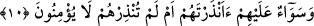

“Önlerinden bir sed ve arkalarından bir sed çektik de onları kapattık, artık
göremezler.” âyetini okuyordu. Düşmanlar onu görmediler, örtü/engel içinde kaldılar.
Hz. Peygamber önlerinden geçti ve Medine’ye yöneldi. Bu hicretin başlangıcıydı.
Keşfü’l-esrâr’da böyle geçmektedir.
İnsânü’l-uyûn’da der ki: “Hz. Peygamber (s.a.) hicret gecesi mübarek hânelerinden
çıkınca yerden bir avuç toprak aldı ve kendisini öldürmek üzere kapıda bekleyen
topluluğun yüzüne saçtı ve Yâsîn sûresinin başından itibaren “Önlerinden bir set ve
arkalarından bir set çektik de onları kapattık, artık göremezler.” âyetine kadar okudu.
Böylece Allah Teâlâ onların gözlerini perdeledi ve Peygamber (s.a.)’i göremediler.
10. Onları uyarsan da uyarmasan da onlar için birdir, inanmazlar.
“Onları uyarsan da uyarmasan da onlar için birdir,” yâni Mekke halkının çoğu
yanında senin onları uyarman ve uyarmaman eşittir. Bu ifâde istifham olmadığı halde
istifham gibi getirilmiştir.
“İnanmazlar.” Çünkü kadîm olan ilim, tercihleri sebebiyle onların küfür üzerinde
ölmelerine hükmetmişti.
Bu ifâde kendinden öncesini te’kid eden, “bir” olmaktaki kapalılığı (icmâl) açıklayan
yeni bir başlangıçtır. Keşfü’l-esrâr’da der ki: “Yâni, Allah Teâlâ kimi böyle bir
sapıklıkla saptırırsa artık ona uyarı fayda vermez.”
Rivâyete göre Ömer b. Abdülaziz (r.h.) Kaderiyye mezhebine mensup Giylân’ı
çağırdı ve ona: “Ey Giylân! Duyduğuma göre sen kader hakkında olur olmaz şeyler
konuşuyormuşsun.” dedi. Giylân: “Ey mü’minlerin emiri, onlar benim hakkımda yalan
söylüyorlar.” dedi. Ömer b. Abdulazîz: “Ey Giylân! Yâsîn sûresinin başından onuncu
âyetin sonuna kadar oku.” dedi. Giylân (bu âyetleri okuyunca): “Ey mü’minlerin emîri,
Allah’a yemin olsun ki sanki bu günden önce ben bu âyetleri hiç okumamışım. Ey
mü’minlerin emîri, seni şâhid tutuyorum ki ben daha önce kader konusunda
söylediklerimden tevbe ettim.” dedi. Bunun üzerine Ömer b. Abdulaziz: “Allah’ım!
Şayet doğru söylüyorsa tevbesini kabul eyle, tevbesinde sâbit kıl. Eğer yalan söylüyorsa
kendisine merhamet etmeyecek birisini ona musallat eyle ve onu mü’minlere ibret kıl!”
dedi. Râvî der ki: Hişam b. Abdülmelik, onu yakaladı, ellerini ve ayaklarını kesti. İbn
Fir’avn: “Ben onu Dımeşk kapısında asılmış olarak gördüm.” demiştir.
Bu hikaye göstermektedir ki Kaderiyye fırkası her kulun kendi işini kendisinin
yarattığını iddiâ edenlerdir. Küfür ve masiyetlerin Allah Teâlâ’nın takdiri ile olduğunu
kabul etmezler. İmam Mutarrazî el-Muğrib’de der ki: “Kaderiyye cebir görüşünde
olan fırkadır. Bunlar her işi Allah’ın takdirine nisbet ederler, çirkin işleri Allah
Teâlâ’ya nisbet ederler. Allah Teâlâ bundan pek yüce ve münezzehtir.